KR — South Korea
The main impact of a 200 basis-point (2.00 percentage-point) rise in United States interest rates on South Korea is a 0.05% drop in GDP by the 12th quarter — a limited spillover. South Korea ranks 12th of the countries in this run by the absolute size of its GDP response, and the model places it in the "minimal" band. That is the headline: a US tightening shock of two full percentage points does reach Korea, but the real-economy cost is small, and the more visible damage sits in financial prices rather than in output.
Demand and trade. Household consumption is the slowest-moving domestic component: it slips only 0.002% below baseline in the first quarter, builds to a peak shortfall of 0.027% around Q13, and is still 0.013% below baseline at Q20. Private investment is far more sensitive, falling 0.02% in Q1 and peaking at −0.21% in Q9 before recovering to roughly flat by Q20 — the classic cost-of-capital channel. Net exports, the trade balance (this model does not split imports from exports), move the other way and are the largest positive offset in the whole table: they rise steadily from 0.02% in Q1 to a peak of 0.13% in Q10, easing to 0.06% by Q20. Government spending edges up modestly, peaking at 0.01% in Q12, a small automatic-stabiliser-style response. Government debt drifts lower relative to baseline throughout, reaching −0.02% by Q20, consistent with the small primary-balance improvement rather than any large fiscal expansion.
External and FX. The real exchange rate — currency strength — appreciates against the baseline, rising 0.10% in Q1 and peaking at 0.51% in Q9, then easing to 0.23% by Q20. That is the key tension in the story: a stronger real currency would normally hurt competitiveness, yet net exports improve. In this model the trade balance gain is driven by the domestic demand contraction (imports fall faster than exports), which outweighs the competitiveness drag from the stronger currency.
Labour. Employment falls gradually, from essentially zero in Q1 to a peak shortfall of 0.037% in Q16, still −0.031% at Q20. Unemployment rises in parallel, peaking at +0.019 percentage points in Q15 and remaining +0.014pp at Q20. Real wages, by contrast, rise: they climb to a peak of +0.08% above baseline in Q13, reflecting the fall in CPI inflation outpacing the softening in nominal wages. So the labour market adjusts through slightly fewer jobs and slightly higher joblessness, while those in work see real pay improve.
Prices. CPI inflation rises initially — +0.02pp in Q1, peaking at +0.03pp in Q2 — before fading and turning negative from Q11, ending at −0.01pp by Q20. Domestic inflation follows the same arc, peaking at +0.02pp in Q2 and turning negative in Q11, ending at −0.01pp. Firms' marginal cost falls steadily, peaking at −0.03% in Q12 and still −0.01% at Q20. The early inflation bump is a pass-through effect; the later disinflation is the demand weakness feeding into prices.
Financial conditions. The local policy rate rises modestly, peaking at +0.06pp in Q8, then turns negative from Q14 and ends at −0.04pp — a small, temporary tightening followed by easing. Government bond prices fall as yields rise: the bond price index drops to a peak shortfall of −0.30% in Q8, then recovers and turns positive from Q14, ending +0.19% above baseline. The 2-year government yield rises to +0.05pp in Q3 before turning negative in Q10 and ending at −0.03pp; the 5-year yield peaks at −0.03pp in Q14; the 10-year yield is negative throughout, drifting to −0.02pp by Q14 and −0.01pp at Q20. Equity prices are the hardest hit: the equity index falls to a peak shortfall of −0.38% in Q8, recovering only slowly to −0.06% by Q20. Tobin's Q, the value of installed capital, tracks investment closely, peaking at −0.15% in Q9 and returning to roughly flat by Q20. House prices decline steadily, peaking at −0.05% in Q18 and still −0.05% at Q20. Bank credit supply contracts only marginally, peaking at −0.01% in Q17, and the lending spread widens by a trivial +0.0001pp at its Q17 peak — financial frictions are essentially absent in this response.
Sectoral and capital. Manufacturing GDP takes by far the largest hit of any series: −0.03% in Q1, peaking at −0.16% in Q9, and still −0.07% at Q20. Services GDP falls much less, peaking at −0.03% in Q12 and −0.01% at Q20. The capital stock erodes slowly, peaking at −0.01% in Q19, reflecting the cumulative investment shortfall.
Timing. The GDP hit is largest at −0.05% in Q12. It has not fully faded by Q20 — output is still 0.02% below baseline — so the effect is persistent but small. The equity and bond-price troughs come earlier, around Q8, while the labour-market and house-price troughs come later, in the mid-to-late teens.
Close. These are model impulse responses relative to a no-shock baseline, not forecasts. They describe how South Korea's economy would deviate from its own baseline path under a 200bp US rate rise, holding everything else in the model fixed.
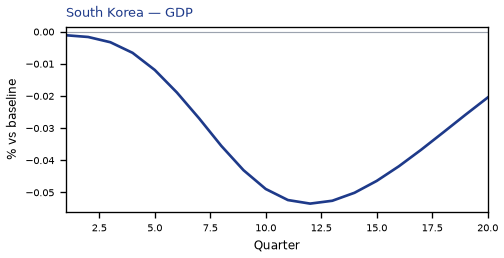
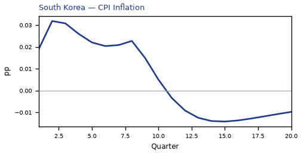
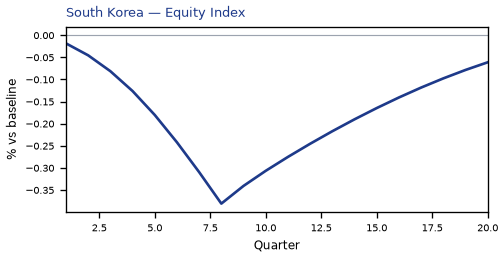
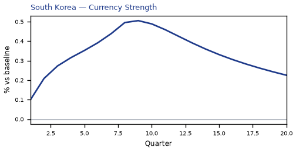
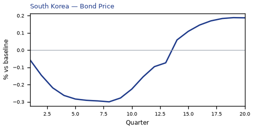
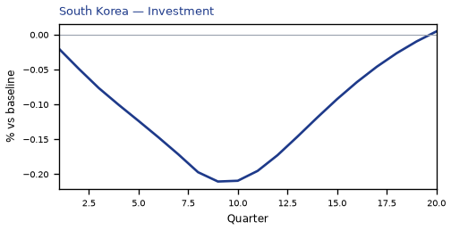
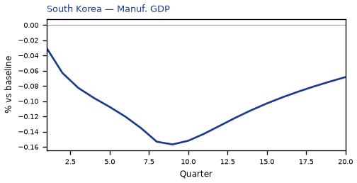
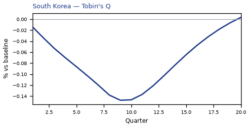
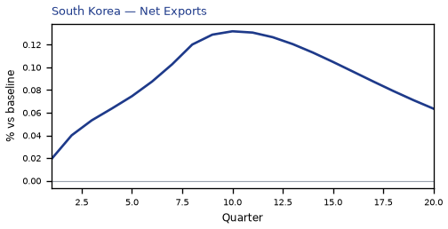
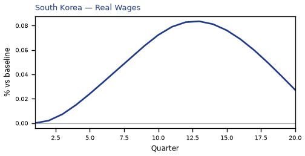

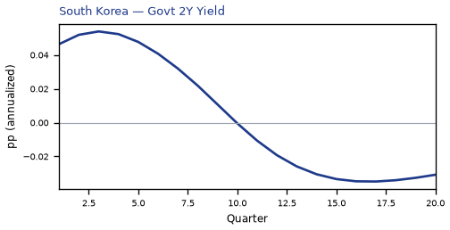
source=live · global_macro_v5 · contract v6 · Q1–Q20 JSON · not financial advice